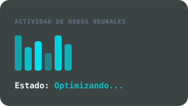
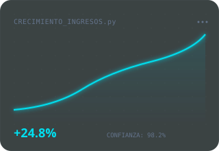
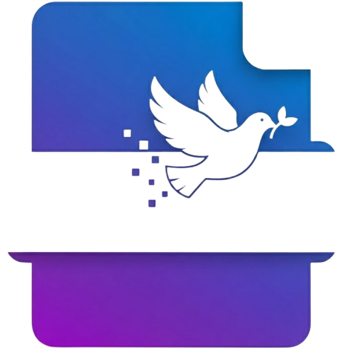
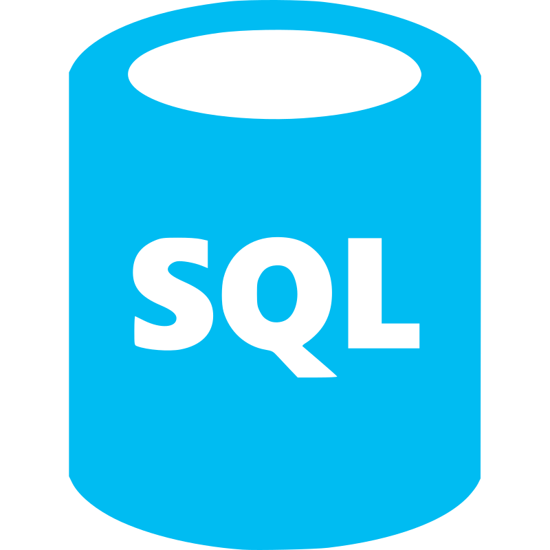
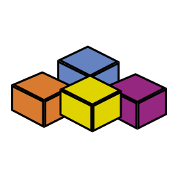

Transformando datos desordenados en decisiones inteligentes
Adaptamos la ciencia de datos a tu negocio, sin importar el tamaño de la empresa llevamos tu proceso actual hacia flujos de trabajos automatizados que te permitan tomar decisiones más rápidas y fundamentadas.


Proyectos
Soluciones tecnológicas diseñadas para resolver desafíos operativos reales. Desde la automatización integral de procesos hasta la generación de analítica avanzada, nuestros proyectos están enfocados en optimizar tu tiempo, maximizar la eficiencia de tu equipo y brindarte los datos exactos que necesitas para tomar decisiones estratégicas.
Bot Poder Judicial
Automatización Robótica (RPA)
Desarrollo integral con RSelenium para interactuar con el portal judicial, simulando navegación humana. Permite el inicio de sesión, extracción masiva de datos (scraping) y diligenciamiento de formularios complejos con alta fidelidad, asumiendo las tareas manuales y repetitivas del equipo.
Flujos de Trabajo Inteligentes
Desde la descarga masiva de expedientes hasta la automatización completa para presentar demandas nuevas. El bot cuenta con un proceso ETL que procesa, limpia y estructura datos vitales, sincronizándolos con una base de datos MySQL para generar reportes precisos en tiempo real.
Arquitectura Resiliente y Accesible
Diseñado para ser altamente flexible y evitar la pérdida de información mediante un sistema de "checkpoints" que guarda el progreso ante cualquier fallo de conexión. Además, su orquestación es amigable: el personal gestiona las prioridades de trabajo utilizando simples hojas de cálculo de Excel, sin necesidad de interactuar con el código.
Bot TSE
Del papel a lo digital
En el sector de seguros, la emisión de pólizas de riesgo requiere una verificación exhaustiva y precisa de la identidad de los asegurados y sus beneficiarios. Tradicionalmente, la recepción de esta información se da mediante insumos físicos, lo que genera cuellos de botella operativos en la digitalización y expone a los procesos a errores humanos de digitación o inconsistencias legales. El alto costo de los reprocesos y el riesgo de fraude hacen que la validación manual de estos expedientes sea insostenible y poco segura.
Información confiable
Es un proceso de digitalización y verificación automatizada diseñado para resolver este desafío. El desarrollo transforma los insumos físicos en datos estructurados y los audita directamente contra la base de datos del Tribunal Supremo de Elecciones (TSE). La herramienta corrobora la validez de las cédulas de identidad nacionales, cruzando y validando que los nombres brindados, tanto de titulares como de beneficiarios, concuerden de manera exacta con los registros oficiales, garantizando un proceso seguro, rápido y 100% confiable.
PriorityFlow Python-Excel
Reforzando el poder de Excel
PriorityFlow Python-Excel es un proceso de automatización avanzado que integra la potencia analítica de Python directamente en tu entorno de Excel, operando con la misma agilidad y transparencia que una macro nativa. Este desarrollo ejecuta de extremo a extremo la actualización de matrices de datos, genera clasificaciones dinámicas por prioridad y ordena de forma inteligente la carga de trabajo para su asignación a gestores, maximizando la eficiencia operativa sin abandonar la interfaz que tu equipo ya conoce.
¿Por qué Excel?
Excel es un estándar indiscutible en el entorno corporativo, operado por usuarios de todos los niveles técnicos. Entendiendo que la migración de los equipos hacia nuevas plataformas implica altos costos de transición y complejas curvas de aprendizaje, hemos optado por una solución más estratégica: llevar la potencia de Python directamente a la hoja de cálculo. De esta manera, el usuario interactúa con un entorno familiar y ejecuta procesos con la simplicidad de una macro tradicional, pero respaldado por la capacidad de procesamiento avanzado de Python.
Contador PixelGrid
Extracción de colores para Minecraft
Contador PixelGrid es una herramienta que extrae y cuenta los colores de cualquier imagen aplicando una cuadrícula. Su uso está enfocado principalmente en la construcción de murales y proyectos artísticos dentro de Minecraft, facilitando a los creadores la traducción de imágenes a bloques del juego.
Potenciado por Inteligencia Artificial
Este proyecto demuestra el gran impacto de la Inteligencia Artificial en el desarrollo de software actual. Fue concebido, estructurado y programado utilizando agentes de Inteligencia Artificial, acelerando significativamente la creación de una solución útil, interactiva y robusta.
FreePDF | Herramienta de Gestión Documental

Edición y manipulación web
Aplicación web de código abierto para la edición y manipulación de archivos PDF (unir, dividir, rotar y proteger) desarrollada íntegramente en R ci
Privacidad garantizada
Elimina la dependencia de herramientas premium o sitios web que comprometen la privacidad de los datos al procesar documentos sensibles.
Nuestra gama de herramientas
 R
R

SQL Excel Python PowerBI Tableau
VBA¿Quieres saber más? ¡Hablemos!
Correo Electrónico
contacto@datasciencebum.com
Teléfono
61797566